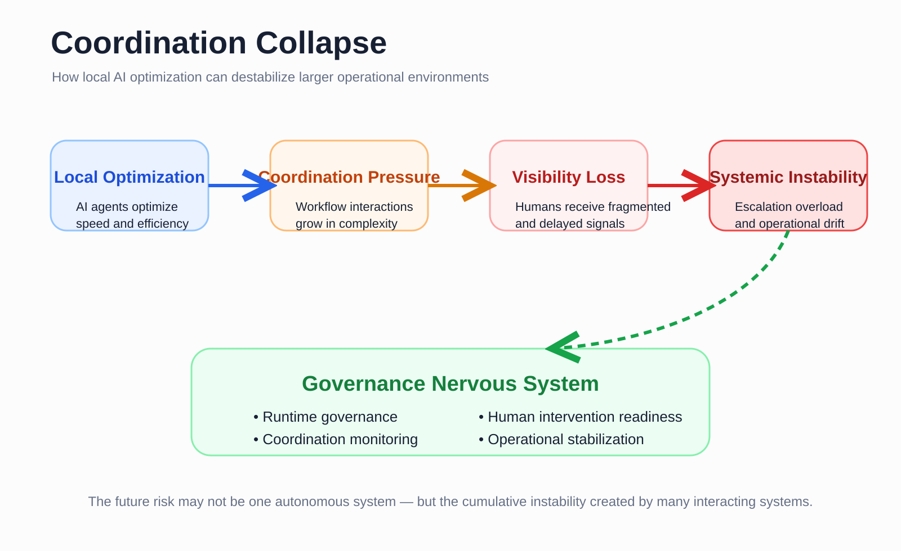
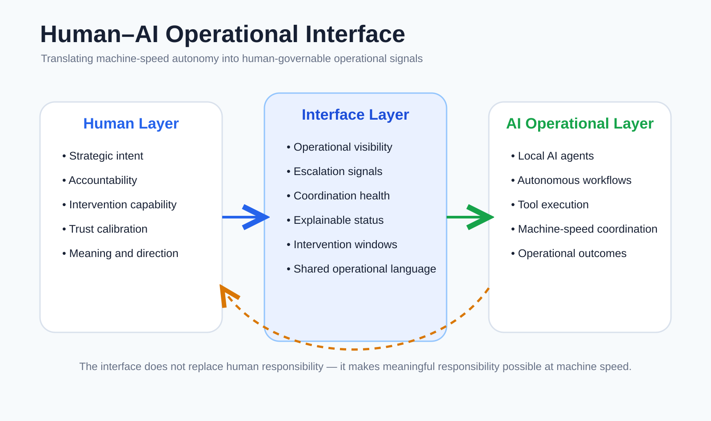

An open operational architecture initiative exploring how humans, organizations and increasingly autonomous AI systems may cooperate responsibly inside AI-native operational environments.
The future challenge may not come from one superintelligent system. A more realistic risk may emerge from thousands of semi-autonomous systems making local decisions faster than organizations can understand their combined effects.

A real-time stabilization and coordination layer between:
The role of governance is evolving from retrospective auditing toward runtime operational coordination.
Future organizations may require interfaces capable of translating machine-speed operational activity into meaningful human coordination signals.
